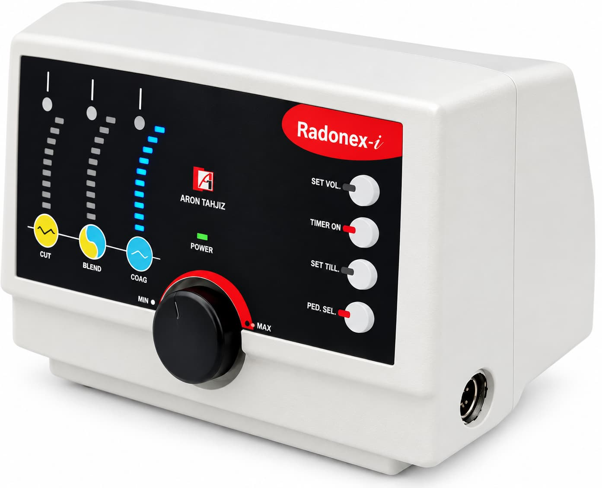
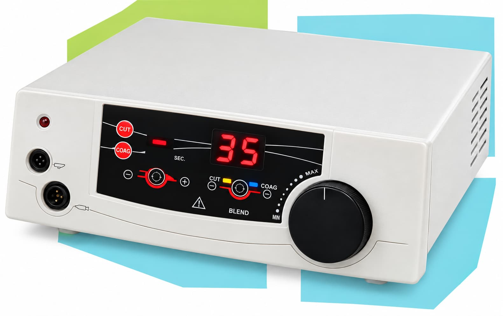
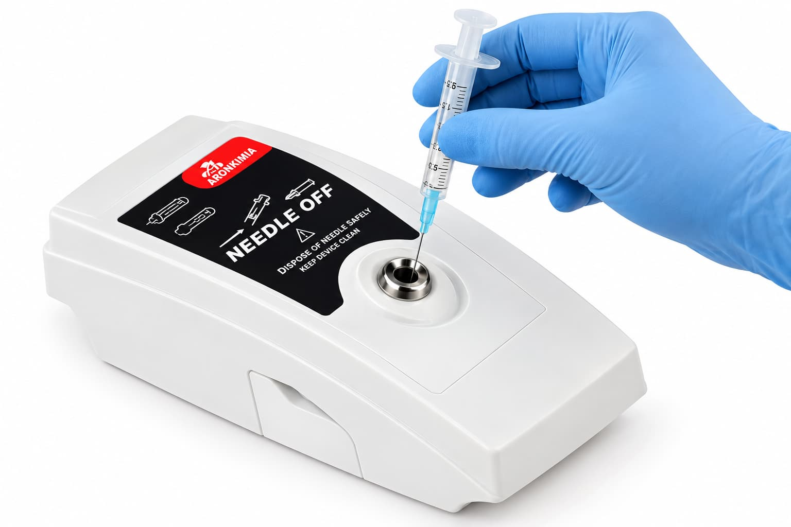
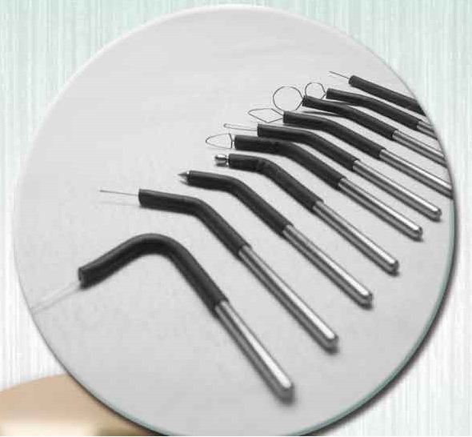
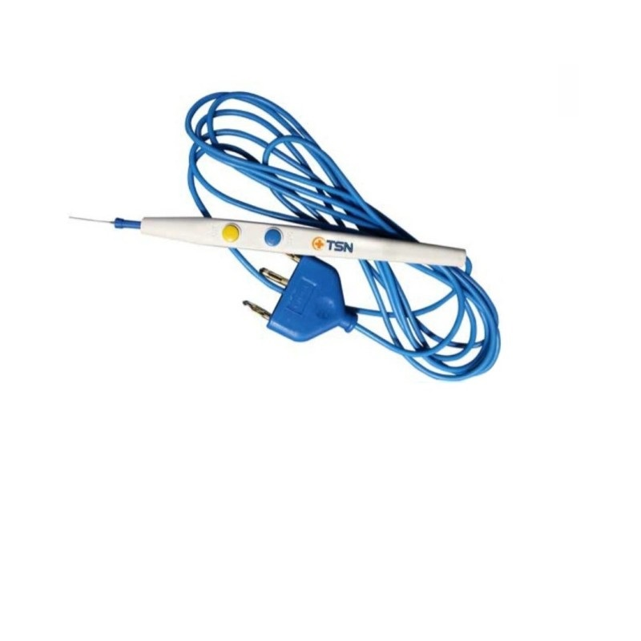
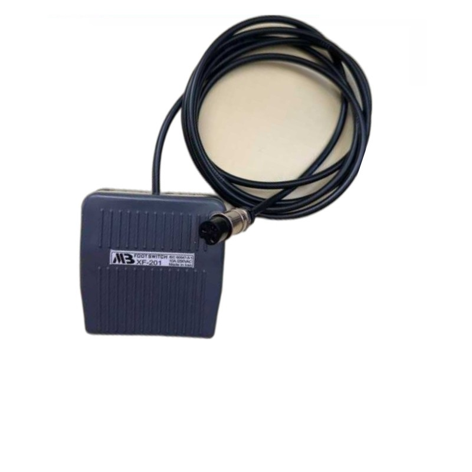
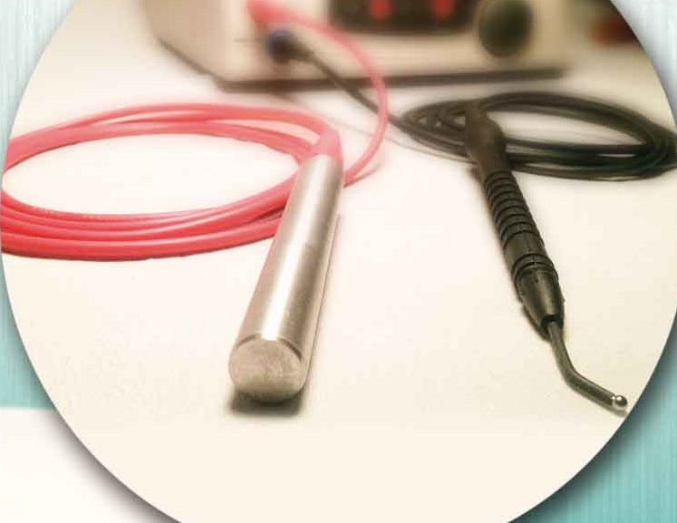

PRODUCTS
محصولات الکتروسرجری
دستگاهها و لوازم الکتروسرجری برای انواع کاربردهای پزشکی
دستگاه الکتروسرجری Excellence 80
برش مونوپلار، انعقاد مونوپلار و بایپلار برای جراحیهای جزئی.
مشخصات فنی:
- توان برش: ۸۰ وات
- توان انعقاد: ۵۰ وات
- توان بایپلار: ۳۰ وات
- فرکانس: ۵۰۰ کیلوهرتز
- نمایشگر دیجیتال، سه حافظه برای هر مود
- سایز: ۳۰×۲۰×۱۰ سانتیمتر، وزن: ۳.۵ کیلوگرم

دستگاه رادیو سرجری Radonex-i
فرکانس کاری ۴.۲ مگاهرتز با حداقل نکروز بافتی و دقت بالا.
مشخصات فنی:
- فرکانس کارکرد: ۴.۲ مگاهرتز
- فرکانس مدولاسیون: ۳۰ کیلوهرتز
- امپدانس خروجی: ۸۰۰ اهم
- ولتاژ ورودی: ۲۲۰–۲۴۰ ولت
- توان خروجی: ۵۰ وات
- وزن: ۲.۲ کیلوگرم

دستگاه الکتروسرجری Aronex
دستگاه الکتروسرجری چندکاره با کاربرد عمومی و تخصصی.
ویژگیها:
- برش و انعقاد مونوپلار و بایپلار
- مناسب جراحیهای عمومی و تخصصی
- تنظیم دقیق توان خروجی
- سازگار با انواع هندپیس و الکترود
- نمایشگر دیجیتال و کنترل دقیق

دستگاه Needle Off
دستگاه امحاء ایمن سرسوزن با استفاده از انرژی الکتریکی.
ویژگیها:
- ذوب و استریل سرسوزن در کمتر از ۳ ثانیه
- دمای ۱۵۰۰ تا ۱۷۰۰ درجه سانتیگراد
- ضریب ایمنی بسیار بالا
- کاهش خطر انتقال بیماریهای عفونی

الکترودهای الکتروسرجری
انواع الکترود مونوپلار و بایپلار برای کاربردهای مختلف جراحی.
انواع الکترود:
- الکترود حلقهای (Loop)
- الکترود سوزنی (Needle)
- الکترود مربعی (Square)
- الکترود کروی (Ball)
- الکترود تیغهای (Blade)

قلم و هندپیس الکتروسرجری
قلم الکتروسرجری با کابل و اتصال استاندارد، مناسب انواع الکترود.
ویژگیها:
- بدنه سبک و ارگونومیک
- دکمههای برش و انعقاد
- کابل با اتصال استاندارد
- سازگار با الکترودهای قابل اتوکلاو

پدال الکتروسرجری (Foot Switch)
پدال کنترل دستگاه الکتروسرجری مدل XP-201.
ویژگیها:
- مدل: XP-201
- بدنه مقاوم و ضد لغزش
- کابل با اتصال DIN استاندارد
- مناسب انواع دستگاههای الکتروسرجری

کابل و متعلقات الکتروسرجری
کابلهای اتصال، کابل هندپیس و سایر متعلقات الکتروسرجری.
محصولات:
- کابل هندپیس مونوپلار
- کابل بایپلار
- کابل پلیت بیمار
- کابل پدال

پلیت بیمار و سایر لوازم
پلیت بیمار و سایر لوازم جانبی الکتروسرجری.
محصولات:
- پلیت بیمار (Single Plate)
- پنس بایپلار (Bipolar Forceps)
- هندپیس مونوپلار و بایپلار
- الکترودهای مصرفی